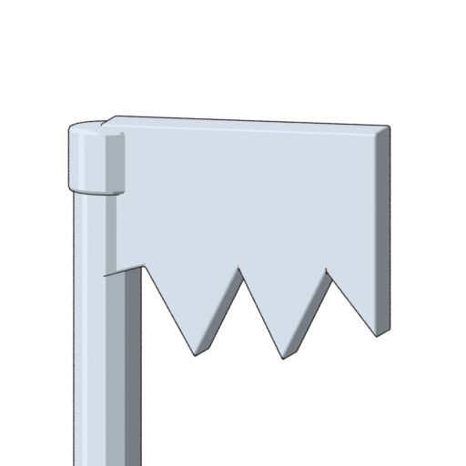
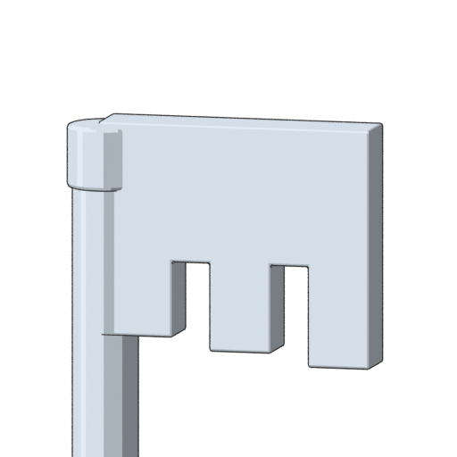

The revised 3D mesh has three broad, flat-ended stepped teeth. Both images below are camera renders of the actual model geometry. The revised shape is ready for visual review; Sora's character mesh and animation are still unfinished.


Complete revised weapon · Blender scene · Model exchange GLB · Supplied reference · Review notes
The Blender scene retains procedural cel materials. The GLB uses a simpler flat palette. The chain is rigid in this pilot; an actual same-arm shoulder carry and foreground tip movement will be checked with Sora's rig.